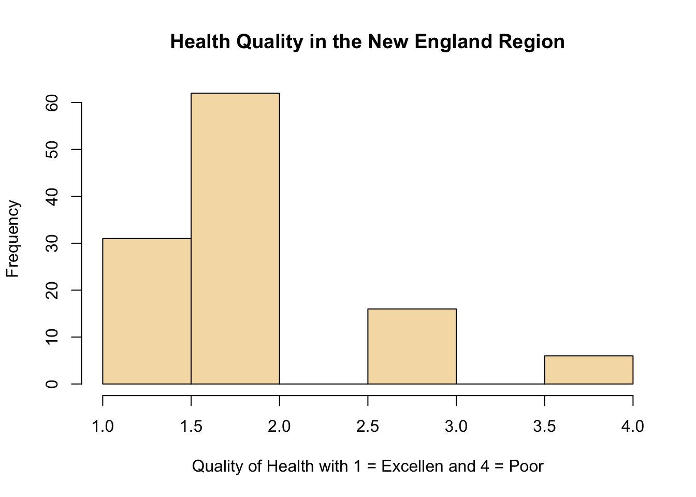
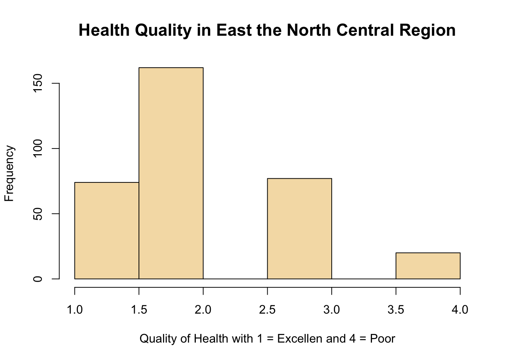
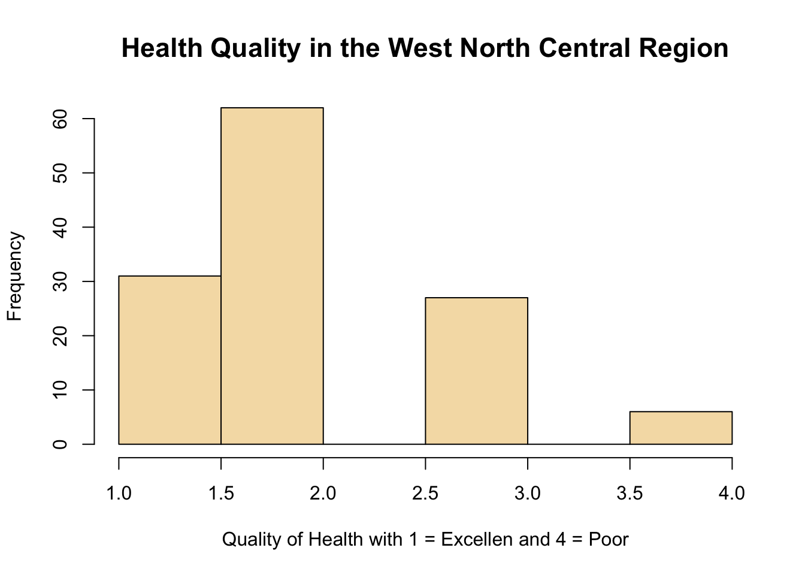
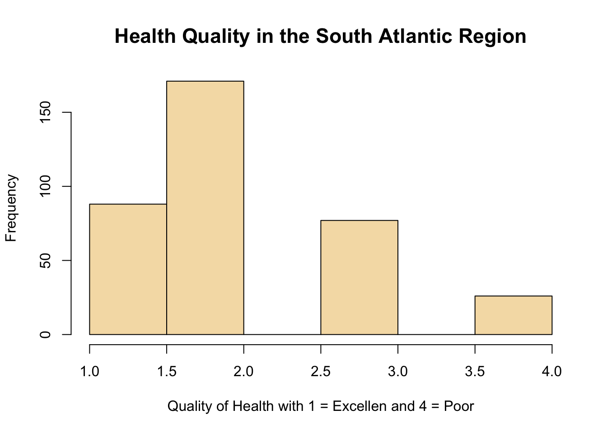
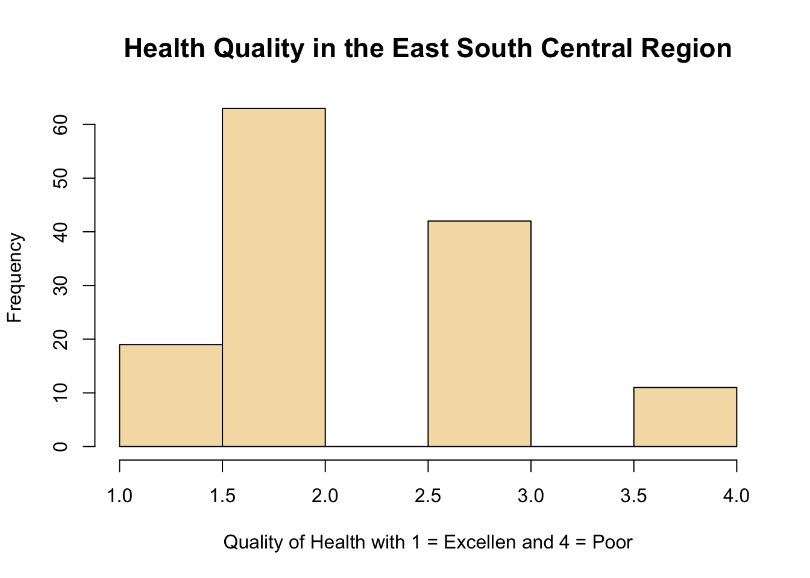
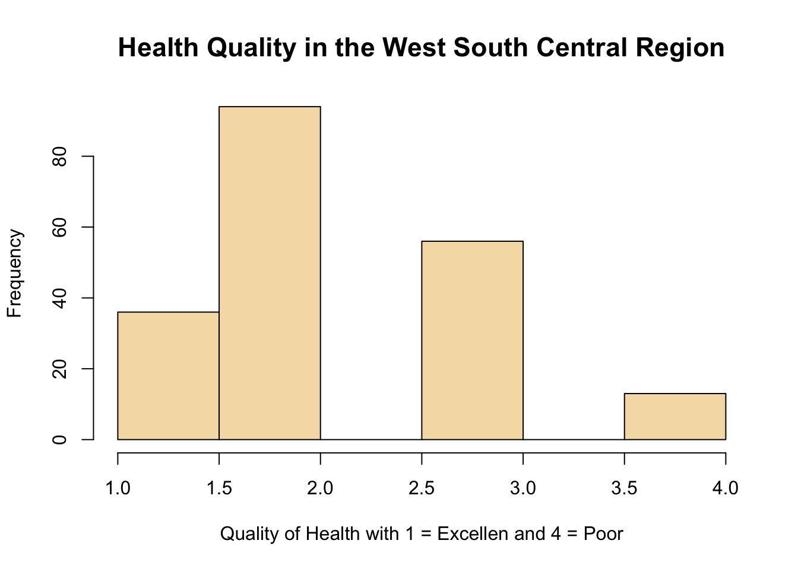
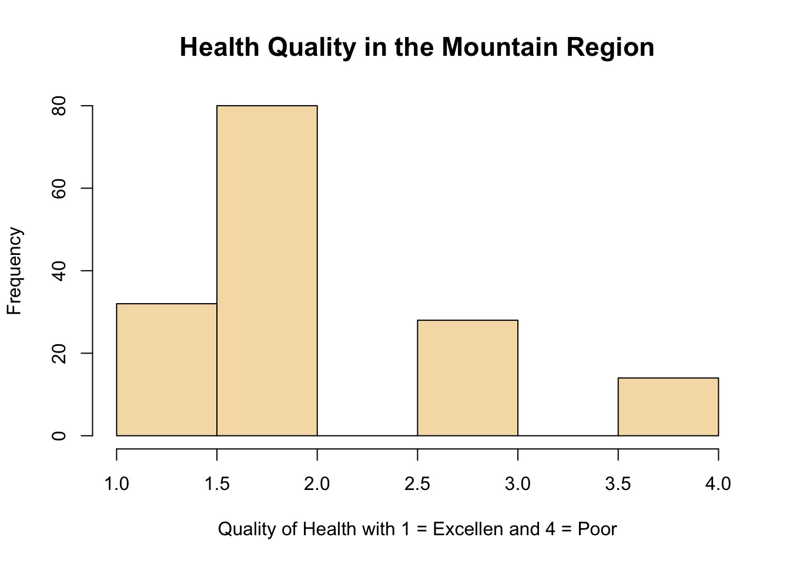
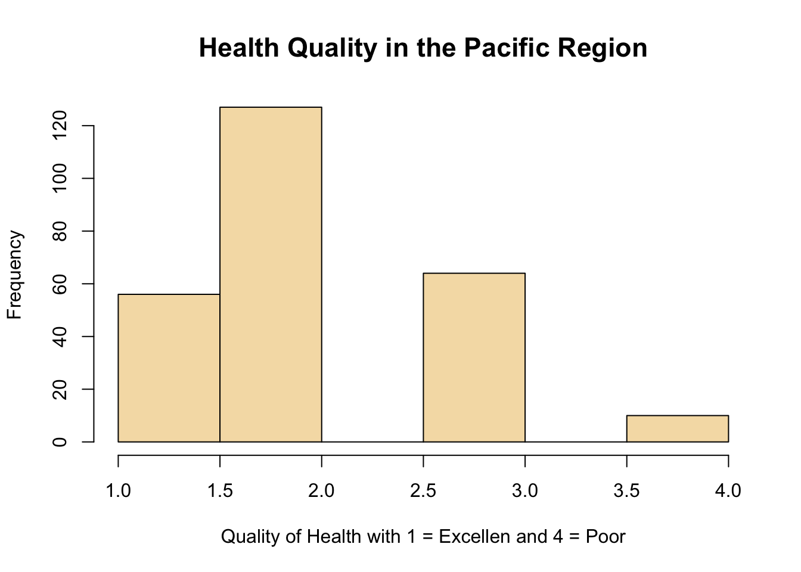

######################################################################
#
# Final Project: Qaulity of Health by Regions of the Unites States
#
######################################################################
# We will first run a package to read data into R.
library(haven)
# there is also a package "foreign" that was showned in class, but "haven" works better.
# For this projedct, I will use GSS2016. GSS2016 was downloaded from this link:
# http://gss.norc.org/Documents/spss/2016_spss.zip
# The datafile was placed in work folder and loaded:
gss <- read_dta("GSS2016.DTA")
###################### 1. Working with data #################
# View the dataset using this command:
View(gss)
# Find out the variable names using this command
colnames(gss)## [1] "mar1" "mar2" "mar3"
## [4] "mar4" "mar5" "mar6"
## [7] "mar7" "mar8" "mar9"
## [10] "mar10" "mar11" "mar12"
## [13] "mar13" "mar14" "abany"
## [16] "abdefect" "abhlth" "abnomore"
## [19] "abpoor" "abrape" "absingle"
## [22] "acqntsex" "adforjob" "adults"
## [25] "advfront" "advsched" "affrmact"
## [28] "age" "age3" "aged"
## [31] "agedchld" "agedpar" "agekdbrn"
## [34] "aidcol" "aidhouse" "aidindus"
## [37] "aidold" "aidunemp" "appemps"
## [40] "artatt" "artatt1" "artatt2"
## [43] "artatt3" "artatt4" "artatt5"
## [46] "artcost" "artexbt" "artfree"
## [49] "artgst" "artint" "artloc"
## [52] "artmostoth" "artothr" "arttime"
## [55] "arttrvl" "artwhy1" "artwhy2"
## [58] "artwhy3" "artwhy4" "artwhy5"
## [61] "artwhy6" "artwhy7" "artwhy8"
## [64] "artwhy9" "askhelp" "astrolgy"
## [67] "astrosci" "attend" "away1"
## [70] "away11" "away13" "away2"
## [73] "away3" "away4" "away5"
## [76] "away6" "away7" "babies"
## [79] "ballot" "balneg" "balpos"
## [82] "betrlang" "bible" "bigbang"
## [85] "bigbang1" "bigbang2" "bored"
## [88] "born" "bossemps" "boyorgrl"
## [91] "bribe" "brlawfl" "brnotax"
## [94] "cappun" "cctv" "cesd1"
## [97] "cesd2" "cesd3" "cesd4"
## [100] "cesd5" "chemgen" "childs"
## [103] "chldidel" "chngewrk" "class"
## [106] "closeblk" "closewht" "clssmtes"
## [109] "codeg" "coden" "codipged"
## [112] "coeduc" "coevwork" "cofund"
## [115] "cohort" "cohrs1" "cohrs2"
## [118] "coind10" "coisco08" "cojew"
## [121] "colath" "colcom" "coldeg1"
## [124] "colhomo" "colmil" "colmslm"
## [127] "colrac" "colsci" "colscinm"
## [130] "comprend" "compuse" "conarmy"
## [133] "conbus" "conclerg" "condom"
## [136] "condrift" "coneduc" "confed"
## [139] "confinan" "coninc" "conjudge"
## [142] "conlabor" "conlegis" "conmedic"
## [145] "conpress" "conrinc" "consci"
## [148] "consent" "contv" "coocc10"
## [151] "coop" "coother" "copres10"
## [154] "coprestg10" "coprestg105plus" "corel"
## [157] "corrupt1" "corrupt2" "cosei10"
## [160] "cosei10educ" "cosei10inc" "courts"
## [163] "cowrkers" "cowrkslf" "cowrksta"
## [166] "crack30" "cutgovt" "cuthours"
## [169] "dailywrk" "dateintv" "decidwrk"
## [172] "degree" "denom" "denom16"
## [175] "dipged" "discaff" "discaffm"
## [178] "discaffw" "discwk5" "divlaw"
## [181] "divorce" "dwelling" "dwelown"
## [184] "earnrs" "earthsun" "econsup1"
## [187] "educ" "electron" "emailhr"
## [190] "emailmin" "emonitor" "equalize"
## [193] "eqwlth" "eth1" "eth2"
## [196] "eth3" "ethnic" "ethnum"
## [199] "evbrkdwn" "evcrack" "evidu"
## [202] "evjob" "evolved" "evolved2"
## [205] "evpaidsx" "evstray" "evwork"
## [208] "exjobsat" "expdesgn" "exptext"
## [211] "extraern" "extrawrk" "facebook"
## [214] "fair" "famdif16" "famgen"
## [217] "family16" "famintjb" "famorjob"
## [220] "fear" "fechld" "feelevel"
## [223] "feeused" "fefam" "fehire"
## [226] "fejobaff" "fepol" "fepresch"
## [229] "finalter" "finrela" "flexhrs1"
## [232] "flickr" "form" "formwt"
## [235] "frndsex" "fucitzn" "fund"
## [238] "fund16" "gender1" "gender10"
## [241] "gender11" "gender12" "gender13"
## [244] "gender14" "gender2" "gender3"
## [247] "gender4" "gender5" "gender6"
## [250] "gender7" "gender8" "gender9"
## [253] "gendereq" "genegen" "getahead"
## [256] "getjob" "givinffor" "givinfusa"
## [259] "god" "goodlife" "googlesn"
## [262] "govtinfo" "granborn" "grass"
## [265] "grnlaws" "gunlaw" "gvinflu1"
## [268] "gvinflu2" "hapcohab" "hapmar"
## [271] "happy" "harass5" "health"
## [274] "hefinfo" "helpblk" "helpful"
## [277] "helpnot" "helporg1" "helpoth"
## [280] "helppoor" "helpsick" "hhrace"
## [283] "hhtype" "hhtype1" "hiinc"
## [286] "hispanic" "hivtest" "hivtest1"
## [289] "hivtest2" "hlphitec" "hlpoths"
## [292] "hlpsoc" "hlthcare" "homosex"
## [295] "hompop" "hope1" "hope2"
## [298] "hope3" "hope4" "hope5"
## [301] "hope6" "hotcore" "hrs1"
## [304] "hrs2" "hrsmoney" "hsbio"
## [307] "hschem" "hsmath" "hsphys"
## [310] "huclean" "hunt" "hunt1"
## [313] "id" "idu30" "if12who"
## [316] "incom16" "income" "income16"
## [319] "indus10" "indusgen" "instagrm"
## [322] "intage" "intecon" "inteduc"
## [325] "intenvir" "intethn" "intfarm"
## [328] "inthisp" "intid" "intintl"
## [331] "intjob" "intlblks" "intlwhts"
## [334] "intmbile" "intmed" "intmil"
## [337] "intrace1" "intrace2" "intrace3"
## [340] "intrecnt" "intsci" "intsex"
## [343] "intspace" "inttech" "intuse"
## [346] "intwkdyh" "intwkdym" "intwkenh"
## [349] "intwkenm" "intyrs" "isco08"
## [352] "isco88" "issp" "jbendmo"
## [355] "jbendyr" "jbintfam" "jbtrain"
## [358] "jew" "jew16" "jobeasy"
## [361] "jobfind" "joblose" "joborfam"
## [364] "jobsall" "jobsat" "kidssol"
## [367] "lasers" "leasthrs" "leavejob"
## [370] "lessreg" "letdie1" "letin1"
## [373] "libath" "libcom" "libhomo"
## [376] "libmil" "libmslm" "librac"
## [379] "life" "linkedin" "liveblks"
## [382] "livewhts" "lngthinv" "localnum"
## [385] "lookjob" "lotr1" "lotr2"
## [388] "lotr3" "lotr4" "lotr5"
## [391] "lotr6" "lowpay" "madeg"
## [394] "maeduc" "maind10" "maisco08"
## [397] "maisco88" "major1" "major2"
## [400] "majorcol" "makejobs" "maocc10"
## [403] "mapres10" "mapres105plus" "marasian"
## [406] "marblk" "marcohab" "marhisp"
## [409] "marhomo" "marital" "martype"
## [412] "marwht" "masei10" "masei10educ"
## [415] "masei10inc" "matesex" "mawrkgrw"
## [418] "mawrkslf" "meovrwrk" "mntlhlth"
## [421] "mobile16" "mode" "mortravl"
## [424] "mosthrs" "moveaway" "moveinus"
## [427] "nanoben" "nanoharm" "nanowill"
## [430] "nataid" "nataidy" "natarms"
## [433] "natarmsy" "natchld" "natcity"
## [436] "natcityy" "natcrime" "natcrimy"
## [439] "natdrug" "natdrugy" "nateduc"
## [442] "nateducy" "natenrgy" "natenvir"
## [445] "natenviy" "natfare" "natfarey"
## [448] "natheal" "nathealy" "natmass"
## [451] "natpark" "natrace" "natracey"
## [454] "natroad" "natsci" "natsoc"
## [457] "natspac" "natspacy" "news"
## [460] "newsfrom" "newskill" "nextgen"
## [463] "nogo" "nogo1" "nounemp1"
## [466] "nounemp2" "nounemp3" "nounemp4"
## [469] "nounemp5" "nounemp6" "nukegen"
## [472] "numemps" "nummen" "numwomen"
## [475] "obey" "obeylaw" "occ10"
## [478] "odds1" "odds2" "old1"
## [481] "old10" "old11" "old12"
## [484] "old13" "old14" "old2"
## [487] "old3" "old4" "old5"
## [490] "old6" "old7" "old8"
## [493] "old9" "oth16" "other"
## [496] "othersex" "othlang" "othlang1"
## [499] "othlang2" "oversamp" "owngun"
## [502] "padeg" "paeduc" "paidhow"
## [505] "paidsex" "paind10" "paisco08"
## [508] "paisco88" "paocc10" "papres10"
## [511] "papres105plus" "parborn" "parsol"
## [514] "partfull" "partners" "partnrs5"
## [517] "partyid" "pasei10" "pasei10educ"
## [520] "pasei10inc" "pawrkslf" "phase"
## [523] "phone" "pikupsex" "pillok"
## [526] "pinterst" "pistol" "polabuse"
## [529] "polattak" "poleff11" "poleff13"
## [532] "poleff16" "poleff17" "polescap"
## [535] "polgbeco" "polhitok" "polint"
## [538] "polmurdr" "polviews" "popespks"
## [541] "popular" "pornlaw" "posslq"
## [544] "posslqy" "postlife" "pray"
## [547] "prayer" "premarsx" "pres12"
## [550] "prestg10" "prestg105plus" "preteen"
## [553] "prfmatt" "prfmatt1" "prfmatt2"
## [556] "prfmatt3" "prfmatt4" "prfmatt5"
## [559] "prfmcost" "prfmdan" "prfmfree"
## [562] "prfmgst" "prfmint" "prfmloc"
## [565] "prfmmostoth" "prfmmus" "prfmnce"
## [568] "prfmothr" "prfmthe" "prfmtime"
## [571] "prfmtrvl" "prfmwhy0" "prfmwhy1"
## [574] "prfmwhy2" "prfmwhy3" "prfmwhy4"
## [577] "prfmwhy5" "prfmwhy6" "prfmwhy7"
## [580] "prfmwhy8" "prfmwhy9" "priagncy"
## [583] "pricecon" "prideorg" "promotn"
## [586] "protest1" "protest3" "proudwrk"
## [589] "prvdhlth" "prvdold" "prvdschl"
## [592] "pubagncy" "racdif1" "racdif2"
## [595] "racdif3" "racdif4" "race"
## [598] "racecen1" "racecen2" "racecen3"
## [601] "racethas" "racethbl" "racethhi"
## [604] "racethna" "racethot" "racethwh"
## [607] "raclive" "racopen" "racwork"
## [610] "radioact" "rank" "ratetone"
## [613] "rcontact" "realinc" "realrinc"
## [616] "reborn" "reg16" "region"
## [619] "relactiv" "relate1" "relate10"
## [622] "relate11" "relate12" "relate13"
## [625] "relate14" "relate2" "relate3"
## [628] "relate4" "relate5" "relate6"
## [631] "relate7" "relate8" "relate9"
## [634] "relatsex" "relhh1" "relhh10"
## [637] "relhh11" "relhh12" "relhh13"
## [640] "relhh14" "relhh2" "relhh3"
## [643] "relhh4" "relhh5" "relhh6"
## [646] "relhh7" "relhh8" "relhh9"
## [649] "relhhd1" "relhhd10" "relhhd11"
## [652] "relhhd12" "relhhd13" "relhhd14"
## [655] "relhhd2" "relhhd3" "relhhd4"
## [658] "relhhd5" "relhhd6" "relhhd7"
## [661] "relhhd8" "relhhd9" "relig"
## [664] "relig16" "reliten" "relpersn"
## [667] "relsp1" "relsp10" "relsp11"
## [670] "relsp12" "relsp2" "relsp3"
## [673] "relsp4" "relsp5" "relsp6"
## [676] "relsp7" "relsp8" "relsp9"
## [679] "res16" "respnum" "revpub"
## [682] "revspeak" "rhiinc" "rhlpoths"
## [685] "rhlpsoc" "richwork" "rifle"
## [688] "rincom16" "rincome" "rintjob"
## [691] "rowngun" "rplace" "rpromotn"
## [694] "rsecjob" "rushed" "rvisitor"
## [697] "rwrkindp" "sampcode" "sample"
## [700] "satfin" "satjob" "savejobs"
## [703] "savesoul" "scibnfts" "scientbe"
## [706] "scientgo" "scienthe" "scientod"
## [709] "scifrom" "scinews1" "scinews2"
## [712] "scinews3" "scistudy" "scitext"
## [715] "secjob" "seeksci" "sei10"
## [718] "sei10educ" "sei10inc" "sethrs"
## [721] "sex" "sexeduc" "sexfreq"
## [724] "sexornt" "sexsex" "sexsex5"
## [727] "shotgun" "sibs" "size"
## [730] "skltrain" "snapchat" "snsmfrst"
## [733] "snsmnew" "snsmot2a" "snsmot2b"
## [736] "snsmot2c" "snsmoth1" "socbar"
## [739] "socfrend" "socommun" "socrel"
## [742] "solarrev" "spaneng" "spanint"
## [745] "spanking" "spanself" "sparms"
## [748] "sparts" "spdeg" "spden"
## [751] "spdipged" "speduc" "spenviro"
## [754] "spevwork" "spfund" "sphlth"
## [757] "sphrs1" "sphrs2" "spind10"
## [760] "spisco08" "spisco88" "spjew"
## [763] "spjewaj" "spkath" "spkcom"
## [766] "spkhomo" "spklang" "spkmil"
## [769] "spkmslm" "spkrac" "spocc10"
## [772] "spother" "sppolice" "sppres10"
## [775] "sppres105plus" "sprel" "spretire"
## [778] "sprtprsn" "spschool" "spsei10"
## [781] "spsei10educ" "spsei10inc" "spunemp"
## [784] "spwrkslf" "spwrksta" "srcbelt"
## [787] "stayorg3" "stoprndm" "stress"
## [790] "stresswk" "strngun" "suicide1"
## [793] "suicide2" "suicide3" "suicide4"
## [796] "suiclse1" "suiclse2" "suimths1"
## [799] "suimths2" "suineg1" "suineg2"
## [802] "suinum" "suinum1" "suirel1"
## [805] "suirel2" "suitime1" "suitime2"
## [808] "suiyrs1" "suiyrs2" "supervis"
## [811] "tapphone" "tax" "taxbylaw"
## [814] "taxmid" "taxpaid" "taxpoor"
## [817] "taxrich" "teens" "teensex"
## [820] "tempgen" "tempwork" "thnkself"
## [823] "timeoff" "toofast" "trust"
## [826] "tumblr" "tvhours" "twitter"
## [829] "unemp" "union" "union1"
## [832] "unionsbd" "unrelat" "uscitzn"
## [835] "useskill" "usewww" "usualhrs"
## [838] "uswar" "uswary" "verdict"
## [841] "version" "vetyears" "vine"
## [844] "viruses" "visitors" "visnhist"
## [847] "vissci" "viszoo" "voedcol"
## [850] "voedncol" "voednme1" "voednme2"
## [853] "vote12" "vpsu" "vstrat"
## [856] "wantads" "wantjob1" "wantjob2"
## [859] "watergen" "webmob" "weekswrk"
## [862] "whatsapp" "whencol" "whenhs"
## [865] "where1" "where11" "where13"
## [868] "where2" "where3" "where4"
## [871] "where5" "where7" "whoelse1"
## [874] "whoelse2" "whoelse3" "whoelse4"
## [877] "whoelse5" "whoelse6" "whydisc5"
## [880] "whyjbend" "widowed" "wkathome"
## [883] "wkpersnl" "wksub" "wksub1"
## [886] "wksubs" "wksubs1" "wksup"
## [889] "wksup1" "wksups" "wksups1"
## [892] "wkwkends" "wlthblks" "wlthwhts"
## [895] "worda" "wordb" "wordc"
## [898] "wordd" "worde" "wordf"
## [901] "wordg" "wordh" "wordi"
## [904] "wordj" "wordsum" "worecsup"
## [907] "workblks" "workhard" "worknow"
## [910] "workwhts" "wornojob" "worryjob"
## [913] "wotrial" "wrkearn" "wrkenjoy"
## [916] "wrkgovt" "wrkindp" "wrkshift"
## [919] "wrkslf" "wrkstat" "wrkwayup"
## [922] "wtss" "wtssall" "wtssnr"
## [925] "wwwhr" "wwwmin" "xhaustn"
## [928] "xmarsex" "xmovie" "xnorcsiz"
## [931] "year" "zodiac" "intstart"
## [934] "snsmyear" "hlthstrt" "huadd"
## [937] "huaddwhy" "dwellpre" "kidsinhh"
## [940] "respond" "incuspop" "neisafe"
## [943] "rlooks" "rgroomed" "rweight"
## [946] "rhlthend" "prfmothr1"#Refer to the GSS codebook for what's in each variable.
head(gss$health, 10) #displays the first 10 observation for the variable health## <Labelled double>
## [1] 2 NA(i) 2 2 1 NA(i) 4 2 2 2
##
## Labels:
## value label
## 1 excellent
## 2 good
## 3 fair
## 4 poor
## NA(n) NA
## NA(d) DK
## NA(i) IAPhead(gss$region, 10) #dipsplas the first 10 observation for the variable region.## <Labelled double>
## [1] 1 1 1 1 1 1 1 2 2 2
##
## Labels:
## value label
## NA(n) NOT ASSIGNED
## 1 new england
## 2 middle atlantic
## 3 e. nor. central
## 4 w. nor. central
## 5 south atlantic
## 6 e. sou. central
## 7 w. sou. central
## 8 mountain
## 9 pacific# Let's look at some descriptive statistics for our two variables. Given that both
# are categorical it doesn't make sense to look at mean, median or quantiles.
# We can plot some figures to visualize disbrution, however. For instant histograms.
health_reg1 <-(gss$health[gss$region == 1])
hist(health_reg1, breaks = 10, main = "Health Quality in the New England Region", col = "Wheat", ylab = "Frequency", xlab = "Quality of Health with 1 = Excellen and 4 = Poor") # distrtibution of health for people in region 1
whealth_reg2 <-(gss$health[gss$region == 2])
hist(health_reg2, 10, main = "Health Quality in the Middle Atlantic Region", col = "wheat", ylab = "Frequency", xlab = "Quality of Health with 1 = Excellen and 4 = Poor", cex.lab = 1,5, cex.main = 1.4) # distrtibution of health for people in region 2health_reg3 <-(gss$health[gss$region == 3])
hist(health_reg3, 10, main = "Health Quality in East the North Central Region", col = "wheat", ylab = "Frequency", xlab = "Quality of Health with 1 = Excellen and 4 = Poor", cex.lab = 1,5, cex.main = 1.4) # distrtibution of health for people in region 3
health_reg4 <-(gss$health[gss$region == 4])
hist(health_reg4, 10, main = "Health Quality in the West North Central Region", col = "wheat", ylab = "Frequency", xlab = "Quality of Health with 1 = Excellen and 4 = Poor", cex.lab = 1,5, cex.main = 1.4) # distrtibution of health for people in region 4
health_reg5 <-(gss$health[gss$region == 5])
hist(health_reg5, 10, main = "Health Quality in the South Atlantic Region", col = "wheat", ylab = "Frequency", xlab = "Quality of Health with 1 = Excellen and 4 = Poor", cex.lab = 1,5, cex.main = 1.4) # distrtibution of health for people in region 5
health_reg6 <-(gss$health[gss$region == 6])
hist(health_reg6, 10, main = "Health Quality in the East South Central Region", col = "wheat", ylab = "Frequency", xlab = "Quality of Health with 1 = Excellen and 4 = Poor", cex.lab = 1,5, cex.main = 1.4) # distrtibution of health for people in region 6
health_reg7 <-(gss$health[gss$region == 7])
hist(health_reg7, 10, main = "Health Quality in the West South Central Region", col = "wheat", ylab = "Frequency", xlab = "Quality of Health with 1 = Excellen and 4 = Poor", cex.lab = 1,5, cex.main = 1.4) # distrtibution of health for people in region 7
health_reg8 <-(gss$health[gss$region == 8])
hist(health_reg8, 10, main = "Health Quality in the Mountain Region", col = "wheat", ylab = "Frequency", xlab = "Quality of Health with 1 = Excellen and 4 = Poor", cex.lab = 1,5, cex.main = 1.4) # distrtibution of health for people in region 8
health_reg9 <-(gss$health[gss$region == 9])
hist(health_reg9, 10, main = "Health Quality in the Pacific Region", col = "wheat", ylab = "Frequency", xlab = "Quality of Health with 1 = Excellen and 4 = Poor", cex.lab = 1,5, cex.main = 1.4) # distrtibution of health for people in region 9
#plots health status by region
#health_status <-structure(list(NE=table(health_reg1), MA=table(health_reg2), EN=table(health_reg3), WN=table(health_reg4), SA=table(health_reg5), ES=table(health_reg6), WS=table(health_reg7), MO=table(health_reg8), PA=table(health_reg9)), .Names=c("New England", "Middle Atlantic", "E. Nor. Central", "W. Nor. Central", "South Atlantic", "E. Sou. Central", "W. Sou. Central", "Mountain", "Pacific"), class="data.frame", row.names=c("Excellent", "Good", "Fair", "Poor"))
#barplot(as.matrix(health_status), main="Quality of Health by Region in the U.S.", ylab = "Number of People", xlab = "Regions in the U.S.", cex.lab = 1.5, cex.main = 1.4, beside=TRUE, col = c("dodgerblue", "pink", "yellow", "purple" ))
#legend("topright", c("Excellent", "Good", "Fair", "Poor"), cex = 1.3, bty = "n", fill = c("dodgerblue", "pink"))
# To see if there is relationship between health and region I'll use regression.
lm(formula = health ~ factor(region), data = gss) # compares each region base on the health of the average person in the region##
## Call:
## lm(formula = health ~ factor(region), data = gss)
##
## Coefficients:
## (Intercept) factor(region)2 factor(region)3 factor(region)4
## 1.97391 0.10452 0.15522 0.08958
## factor(region)5 factor(region)6 factor(region)7 factor(region)8
## 0.13935 0.35942 0.25724 0.18193
## factor(region)9
## 0.13504summary(lm(formula = health ~ factor(region), data = gss)) # gives F and P statistics##
## Call:
## lm(formula = health ~ factor(region), data = gss)
##
## Residuals:
## <Labelled double>
## Min 1Q Median 3Q Max
## -1.33333 -0.33333 -0.11326 0.76884 2.02609
##
## Labels:
## value label
## 1 excellent
## 2 good
## 3 fair
## 4 poor
## NA(n) NA
## NA(d) DK
## NA(i) IAP
##
## Coefficients:
## Estimate Std. Error t value Pr(>|t|)
## (Intercept) 1.97391 0.07689 25.671 < 2e-16 ***
## factor(region)2 0.10452 0.09615 1.087 0.277175
## factor(region)3 0.15522 0.08919 1.740 0.081960 .
## factor(region)4 0.08958 0.10634 0.842 0.399690
## factor(region)5 0.13935 0.08826 1.579 0.114565
## factor(region)6 0.35942 0.10464 3.435 0.000606 ***
## factor(region)7 0.25724 0.09659 2.663 0.007804 **
## factor(region)8 0.18193 0.10162 1.790 0.073578 .
## factor(region)9 0.13504 0.09251 1.460 0.144539
## ---
## Signif. codes: 0 '***' 0.001 '**' 0.01 '*' 0.05 '.' 0.1 ' ' 1
##
## Residual standard error: 0.8246 on 1876 degrees of freedom
## (982 observations deleted due to missingness)
## Multiple R-squared: 0.009192, Adjusted R-squared: 0.004967
## F-statistic: 2.175 on 8 and 1876 DF, p-value: 0.02665Copyright © 2017 Menvekeh Daramay. All rights reserved.